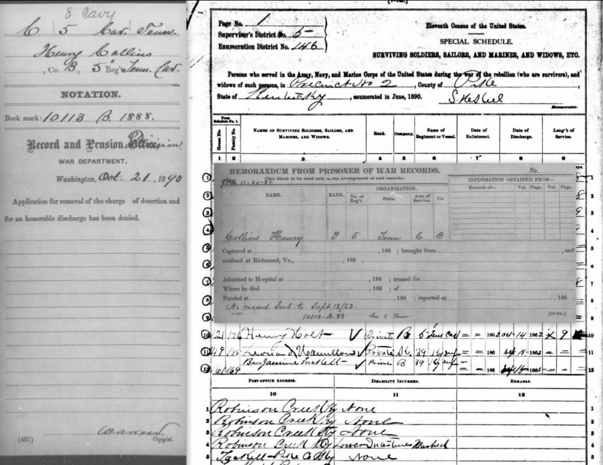
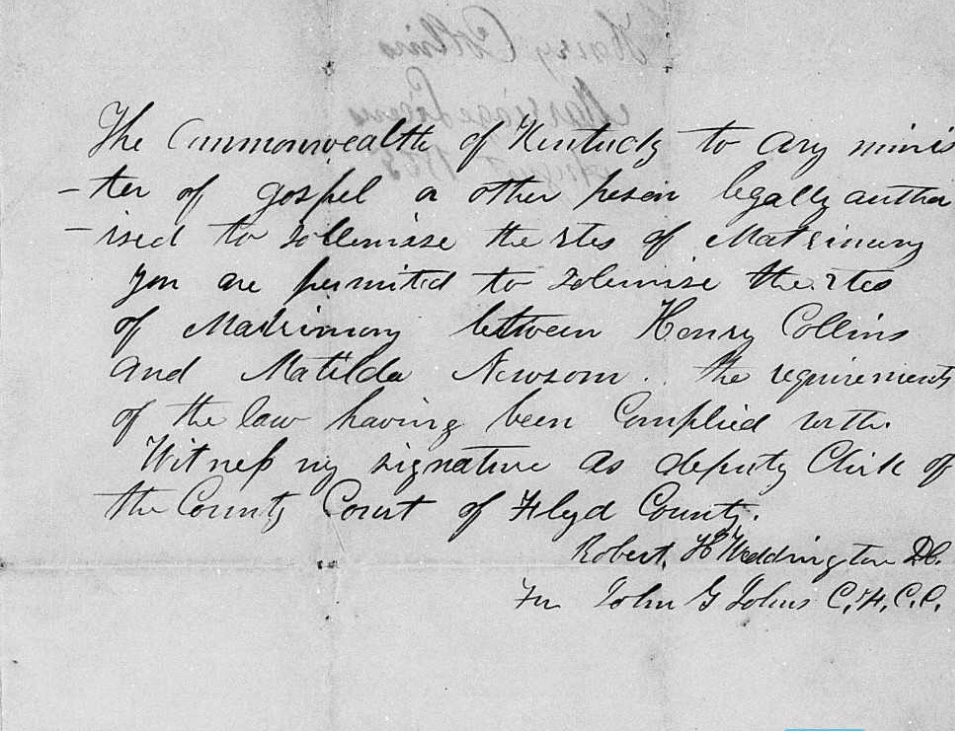
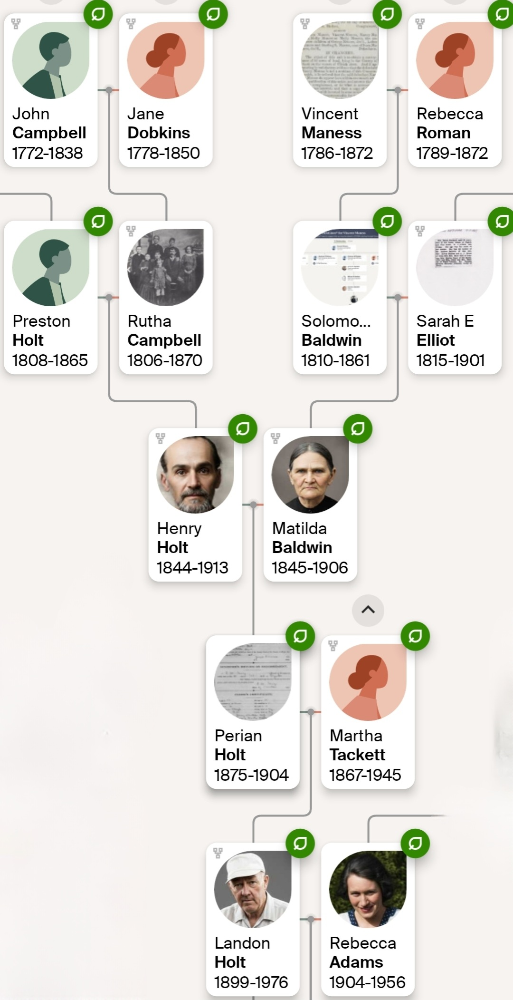

Vital Statistics
- Born: July 1844, Grainger County, Tennessee
- Died: 1913, Pike County, Kentucky
- Parents: Preston Holt and Rutha Campbell
- Spouses: Matilda (Baldwin) Newsom (married 1866); Serilda "Rilda" Adams (married 1909)
- Also Known As: Henry Collins (Civil War alias)
Early Life in Tennessee
Henry Holt was born in July 1844 in the 11th Civil District of Grainger County, Tennessee. He was the son of Preston Holt and Rutha Campbell and grew up in a large farm household nestled in the rugged hills near Hipsher's Mill Creek.
Henry's childhood record was long obscured by a transcription error in the 1850 U.S. Census. The enumerator's handwriting caused the family surname to be indexed as "Hatt," "Hott," or "Halt," though original records confirm the household was indeed that of Preston Holt. This 1850 census record also reveals that the Holt family lived just two doors away from Hazard Collins and near Moses Collins. This close childhood association with the Collins family would later prove pivotal to Henry's survival and identity during the Civil War. By 1860, Henry was recorded at age 14 living in the household of his father, Preston Holt.
The Civil War and the "Henry Collins" Alias
While oral traditions later suggested Henry might have been a Confederate bushwhacker, military records confirm he was a Union soldier who served under an assumed name. On April 18, 1863, at the age of 18, Henry enlisted in the Union Army in Kingston, Tennessee.
He did not enlist under his legal name. Instead, he signed up as Henry Collins, serving as a Private in Company B, 8th Tennessee Cavalry. The use of this alias was likely a strategic choice rooted in his upbringing. He retained his first name but adopted the surname of his childhood neighbors, the Collins family. This allowed him to conceal his enlistment from local Confederate sympathizers or perhaps his own family in a region deeply divided by guerrilla violence.
Henry served for several months before deserting his regiment on September 14, 1863. Now a fugitive from military justice, he was forced to leave Tennessee permanently.

"Some say that Henry Holt wasn't a Holt at all, but had just taken that name when he came out of the ranks of the Yankee Army, seeking a safe place in those Kentucky hills to hide out from the government."
Charles Little, grandson
Migration and Marriage to Matilda Baldwin
Following his desertion, Henry joined a broader migration of the Holt family out of Tennessee. While his siblings scattered to Illinois and other parts of Kentucky, Henry fled north into the rugged isolation of Pike and Floyd counties in Kentucky. It was here that he met the widow Matilda (Baldwin) Newsom.
In 1866, Henry and Matilda were married in Floyd County. The marriage bond was issued under the name he was still using at the time: Henry Collins. This document serves as the primary genealogical link proving that Henry Holt and Henry Collins were the same individual. Shortly after his marriage, Henry felt safe enough to revert to his legal birth name.
By the 1880 census, he was listed in Floyd County as Henry Holt, a farmer living with Matilda and their children. This family unit included his son, Andrew Jackson Holt (born 1872), and daughter, Rena Holt (born 1879).

The 1890 Veterans Schedule — Identity Unmasked
In 1890, Henry appeared on the Special Schedule of Union Veterans. In this record, he finally merged his two identities. He was listed as Henry Holt (indexed as "Nolt"), but he explicitly claimed service in the Tennessee Cavalry during the specific period he had served as "Henry Collins." This provided a retrospective acknowledgment of his service under the alias.
Hoping the government might have forgiven the chaos of the war, Henry applied for a veteran's pension. The War Department was not fooled. On October 21, 1890, the Record and Pension Division issued a cold, bureaucratic rejection. They correctly identified "Henry Holt" as Henry Collins and noted that the "charge of desertion" still stood. Henry lived the rest of his life denied the pension he desperately needed.
Later Life and Second Marriage
Matilda died in 1906, leaving Henry a widower in his 60s. In 1909, at the age of 65, he married Serilda "Rilda" Adams, a woman forty years his junior (born 1884). Due to the significant age gap, Rilda has occasionally been misidentified in records as the mother of Henry's older children. However, dates confirm she was only five years old when Henry's daughter Rena was born. Rilda was Henry's second wife and a stepmother to his adult children, acting as his companion in his final years.
Henry Holt died in 1913 in Pike County, Kentucky. His life was defined by adaptation and reinvention. He survived the Civil War by assuming a new identity, outlived his first wife, and successfully transplanted his branch of the Holt family from the hills of Tennessee to the mountains of Kentucky.

Where the Rhine Meets the Ridge — The Genetic Legacy
For generations, the descendants of Henry Holt were told they were "Black Dutch" or part Cherokee. The oral history described dark skin, high cheekbones, and a mysterious lineage. Today, by combining advanced DNA analysis with rediscovered archival records, we can separate the myth from the biology.
The "German" Truth — The Paternal Line
The heavy percentage of Germanic and Dutch DNA (25%) found in the Holt profile does not come from a mystery source. It comes from Henry's paternal grandmother, Elizabeth Bowman. Traced back to the Baughman family (anglicized to Bowman), her grandfather Hans Jerg Baughman was a German immigrant. Her father, William E. Bowman, was a pioneer of the highest order — a man who lived in Alum Cave to protect his family and built the first Methodist church in the valley.
The "Cherokee" Legend — The Maternal Line
The persistent stories of Indigenous and African ancestry entered the family through Henry's mother, Rutha Campbell. The true source of "trace" Indigenous DNA (verified on Chromosome 10 & 20) was Rutha's grandmother, Dorcas Johnson. The Johnson family was part of the mixed-race frontier community that settled on Little Sycamore Creek — the historical heart of the Melungeon experience.
The Convergence
Henry Holt (1844) was the living embodiment of this convergence. When his father Preston (the son of the German Bowmans) married Rutha (the daughter of the Campbell/Dobkins line), they blended sturdy German "Baughman" genetics with the complex, tri-racial "Johnson" genetics. He was the intersection of two powerful American stories: grandson of German pioneers who slept in caves, and son of a mother who carried the hidden genetic history of the Appalachian frontier.
Sources & Citations
- 1900 U.S. Census — Pike County, Kentucky, population schedule, Magisterial District 2, p. 11A, dwelling 184, family 188, Henry Holt. Establishes Henry's birth date (July 1844) and location in Kentucky later in life.
- 1850 U.S. Census — Grainger County, Tennessee, population schedule, District 11, p. 91A, dwelling 1590, family 1635, Henry Hatt in Preston Hatt household. Proves Henry's parentage despite the "Hatt" transcription error.
- 1866 Floyd County Marriage Bond — Bond issued to "Henry Collins" for his marriage to Matilda (Baldwin) Newsom. Primary document linking the Henry Holt and Henry Collins identities.
- Union Army Enlistment Record — Henry Collins, Private, Company B, 8th Tennessee Cavalry, enlisted April 18, 1863, Kingston, Tennessee. Deserted September 14, 1863.
- 1890 Special Schedule of Union Veterans — Henry Holt ("Nolt"), claiming service in the Tennessee Cavalry. War Department rejection letter, October 21, 1890, noting "charge of desertion."